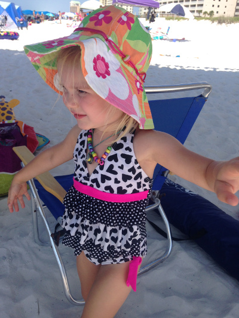
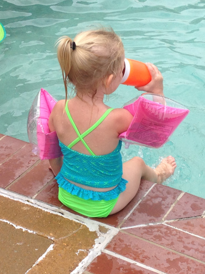

Home
Age 1
Age 2
Age 3
Age 4
Meet Adrian Miller
Your browser does not support HTML5 video.
Home
Age 1
Age 2
Age 3
Age 4
Adrian at Age 3
Sprinkler-running in the Backyard
Kite-flying at the Beach

Water Sports Pro at the Pool

Home
Age 1
Age 2
Age 3
Age 4
Adrian at Age 4-ish
Boating on the 4th of July
Riding Behind the Boat
Taking a Break from the Boat